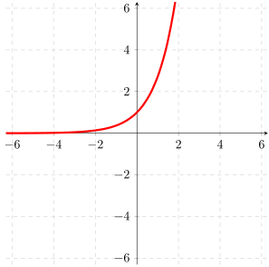

- (a)
- Find the domain and range of \(g\).
- (b)
- Find the values of \(g(1), g(0), g(-1)\) and plot the points \((1,g(1)), (0,g(0)),\) and \((-1,g(-1))\) on the graph of \(g(x)=e^x\).
- (c)
- Graph \(h(x)=\ln (x)\) on the same axis as \(g(x)=e^x\).
- (d)
- Find the domain and range of \(h\).
- (e)
- Find the values of \(h(1), h(0), h(-1), h(e), h\left (\frac {1}{e}\right )\), or say \(x\) not in the domain.